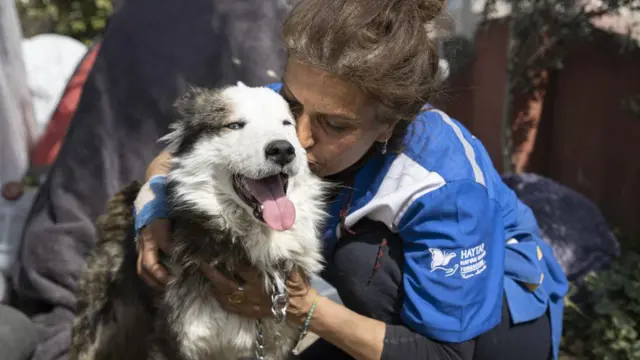

Projeto 01
Resgate Seguro
Representa o acolhimento inicial de animais encontrados em situação de risco, com encaminhamento para avaliação, abrigo temporário e cuidados necessários.
Como a comunidade contribui: comunicar casos com responsabilidade, apoiar transporte seguro e divulgar necessidades de materiais.